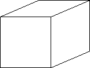
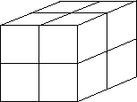

| Scaling Relationships - Cube |
| Finally, we repeat this whole procedure using a cube. Start with a cube. Scale the length,
width, and height by 1/2 and determine how many scaled cubes are contained in the
original cube. |
|  | |
 |
| The original cube | |
Eight copies scaled by 1/2 |
|
| We see there are eight copies of the original cube scaled by 1/2 contained
in the original cube. |
| Notice that 8 = (1/(1/2))3. |
| 13. Scale the cube by 1/3. How many of the smaller cubes are contained in the original cube? |
| Notice that 27 = (1/(1/3))3. |
| 14. Scale the cube by 1/4. How many of the smaller cubes are contained in the original cube? |
| 15. Write an equation relating 64 and 1/4. |
| 16. Scale the cube by 1/10. How many of the smaller cubes are contained in the original cube? |
| 17. Write an equation relating 1000 and 1/10. |
| 18. Scale the cube by 1/n. How many of the smaller cubes are contained in the
original cube? |
| 19. Write an equation relating this number and 1/n. |